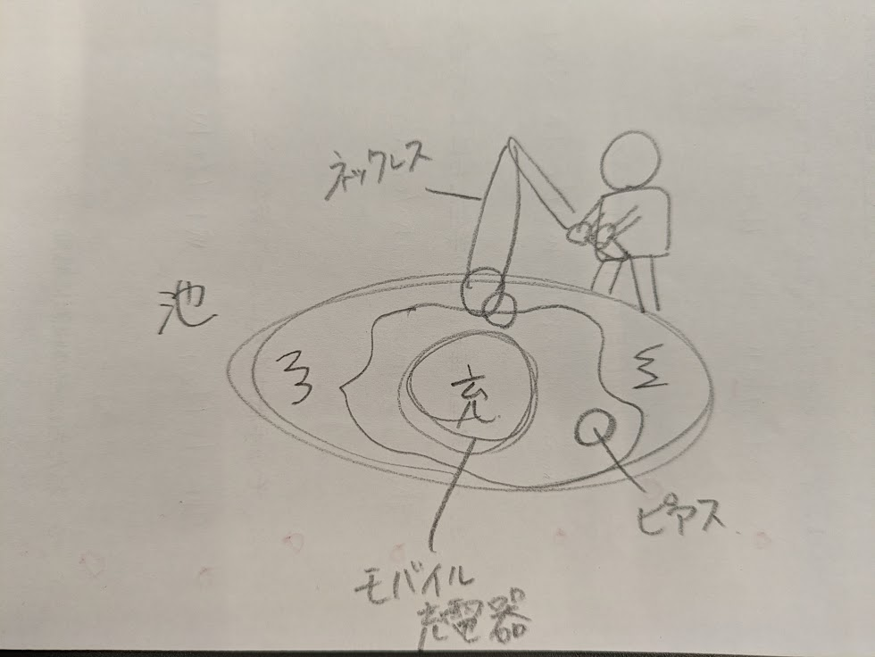

<h1>日常を釣る</h1>


<h3>作った作品はこちら↑</h3>
<h3>スケッチ↓</h3>

<a href="files/iketoouti.dxf" >dxfファイルはこちら</a><br>
<h3>作品の説明</h3>
この作品のテーマは<span style="color: red;">「池で釣りをする人」</span>です。<br>
池や台座などの部分はレーザーカッターを使って木材を加工し、池で釣りをしている人は3Dプリンターを使って制作しました。<br>
さらに、自分が普段身につけているアクセサリーを作品の一部として使用しました。<br>
この作品で表現したかったのは、家に帰ってきたときにアクセサリーを外し、それを置くという日常の何気ない行動です。<br>
アクセサリーを置いていない状態では、釣り竿のような棒を持って座っている人がいるだけに見えます。<br>
しかし、家に帰ってアクセサリーを外し、棒の部分に引っ掛けることで、釣りをしている人が魚を釣ったように見え、作品が完成します。<br>
私は、作品をただ見るだけではなく、自分自身の行動によって完成するところに面白さがあると考えました。<br>
普段何気なく行っている<span style="color: red;">「帰宅してアクセサリーを外す」</span>という行動を作品に取り入れることで、作品と自分の生活がつながります。<br>
そして、アクセサリーを置いた瞬間に、ただの置物だったものが「魚を釣った人」に変化することで、少し驚いたり、面白いと感じたりすることができると考えました。<br>
また、実際に自分が普段使っているアクセサリーを使っているため、作品の中に自分の日常生活の一部が含まれています。<br>
レーザーカッターと3Dプリンターで作った物だけで完結させず、自分が毎日使う物を組み合わせることで、普段の生活と作品をつなげました。
<h3>制作プロセスの中で調べたこと</h3>
<br>
今回私は釣りをしている人を3Dプリンターで作成しました。<br>
人のサイズが小さくプリントするときに倒れてしまうかもしれないと言われました。<br>
そこで<span style="color: red;">Raft</span>という機能を教えてもらいました。<br>
Raftとは印刷物の下に板状の土台をつけることです。<br>
<h4>やり方</h4>
<ol>
   <li> Print Settingを開く</li>
    <li>Build Plate Adhesionを開く</li>
   <li> Build Plate Adhesion TypeをRaftに変える</li>
   <li> Sliceを押してPreviewで確認する</li>
</ol>
